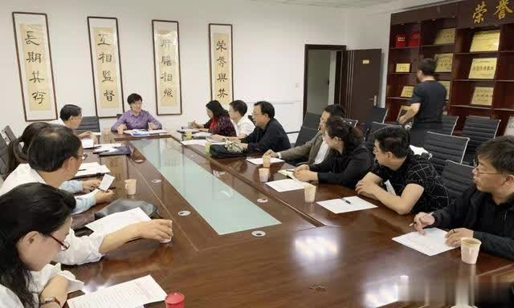

25月26日，赤峰市政府副市长、农工党赤峰市委主委李艳茹主持召开农工党赤峰市委员会六届十四次全委扩大会议。

会议传达了农工党自治区委《开展不忘合作初心 继续携手前进”主题教育活动2019年工作计划》《开展新中国成立70周年庆祝活动的通知》，通报了赤峰市委统战部关于部领导班子工作分工情况，介绍了2019年度农工党调研课题进展情况，表彰了2018年度被农工党区委采用信息的人员，并对开展基层组织创优工作、《健康视频讲座》发布会、建国70周年庆祝活动、社会服务月等重点工作进行安排部署。
会议强调，要提高思想认识，深入学习贯彻习近平新时代中国特色社会主义思想和中共十九大精神，引导全市党员增进对中国共产党的政治认同，把履职思路和重点统一到中共中央战略部署上来，把智慧和力量凝聚到自治区党委、市委目标任务上来。要强化理论学习，开展农工党党史和习近平新时代中国特色社会主义思想的学习，做到入脑入心，真学真懂，切实提高理论素养和履职能力。要积极履职尽责，加强社情民意信息及调研报告的撰写工作，放下身、沉下心，针对社会热点和难点问题积极开展调查研究，积累翔实可靠资料，撰写社情民意信息，提出可操作性强的建议，为领导科学决策提出依据。